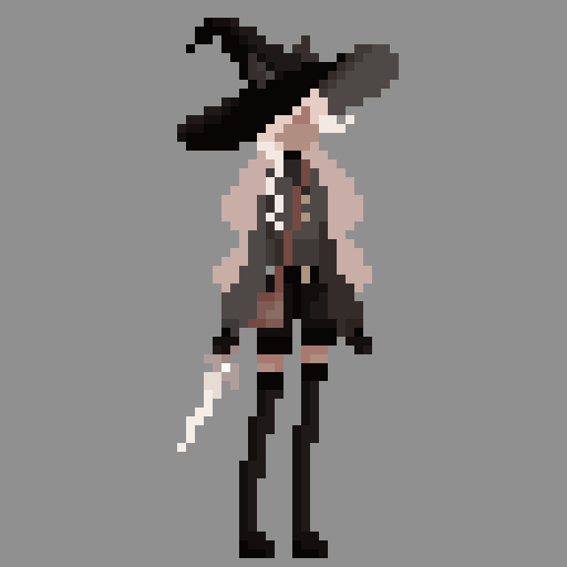

The Adventure of Mammy is a 2D narrative adventure game being developed independently. Players navigate through an action-filled enviroment that represents the hardships of long-distannce relationships through narrative and environmental storytelling.
[ View my code here! ]While still in development, the sprites and videos below showcases mini-prototypes to experiment with player movement and asethetic.
Unity, Aseprite, FL Studio